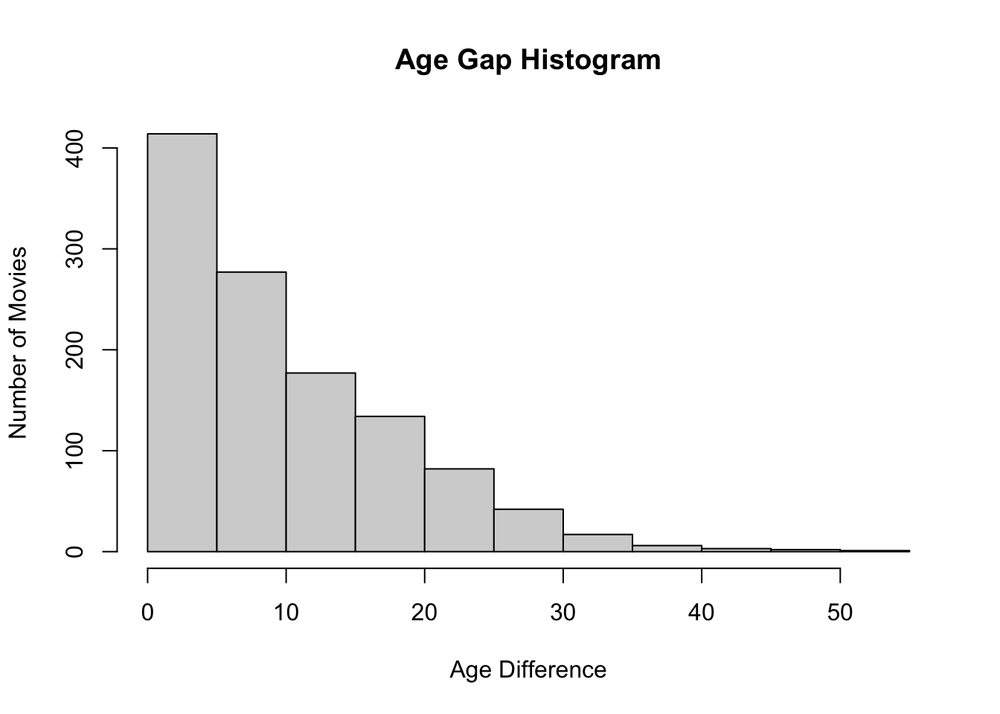

library(gtsummary)
library(tidyverse)
library(broom)
agegap_cols <- c("movie_name", "release_year", "director",
"age_difference", "couple_number", "actor_1_name",
"actor_2_name", "character_1_gender", "character_2_gender",
"actor_1_birthdate", "actor_2_birthdate", "actor_1_age",
"actor_2_age")
agegap <- read_csv(here::here("age_gaps.csv"),
col_names = agegap_cols)Final Project Quarto
agegap = subset(agegap, select = -c(couple_number, actor_1_birthdate,
actor_2_birthdate, age_difference))
agegap$character_1_gender <- ifelse(agegap$character_1_gender
%in% c("man"),1,0)
agegap$character_2_gender <- ifelse(agegap$character_2_gender
%in% c("man"),1,0)agegap$actor_1_age <- as.numeric(agegap$actor_1_age)
agegap$actor_2_age <- as.numeric(agegap$actor_2_age)
agegap$age_difference <- (agegap$actor_1_age - agegap$actor_2_age)tbl_summary(
agegap,
by = character_1_gender,
include = c(actor_2_age, actor_1_age,
character_2_gender),
label = list(
actor_2_age ~ "Age of Actor 2",
actor_1_age ~ "Age of Actor 1",
character_1_gender ~ "Gender Identity of Character 1",
character_2_gender ~ "Gender Identity of Character 2"
),
missing_text = "Missing")| Characteristic | 0, N = 2151 | 1, N = 9411 |
|---|---|---|
| Age of Actor 2 | 30 (25, 34) | 29 (25, 34) |
| Missing | 1 | 0 |
| Age of Actor 1 | 35 (29, 40) | 40 (35, 48) |
| Missing | 1 | 0 |
| Gender Identity of Character 2 | 203 (94%) | 12 (1.3%) |
| 1 Median (IQR); n (%) | ||
table_summ <- tbl_summary(
agegap,
by = character_1_gender,
include = c(actor_2_age, actor_1_age,
character_2_gender),
missing_text = "Missing")
inline_text(table_summ, variable = "actor_2_age",
column = "0")[1] "30 (25, 34)"In Table 1, the median age of female actors recorded as Actor 2 is 30 (25, 34)
actor1age_table <- tbl_uvregression(
agegap,
y = actor_1_age,
include = c(actor_2_age, age_difference, character_1_gender,
character_2_gender),
method = lm)agediffvalue <- inline_text(actor1age_table, variable = "age_difference")
avgact1age <- mean(agegap$actor_1_age, na.rm = TRUE)
avgact2age <- mean(agegap$actor_2_age, na.rm = TRUE)The average age of Actor 1 actors is 40.6
The average age of Actor 2 actors is 30.2
hist(agegap$age_difference)
In Figure 1, the relationship between number of actors and age difference is inversely related. The age difference between Actors 1 and 2 increases as the frequency decreases.
mean_age <- function(age_difference) {
t <- length(age_difference)
mean <- sum(age_difference, na.rm = TRUE)/t
return(mean)
}
mean_age(agegap$age_difference)[1] 10.41522